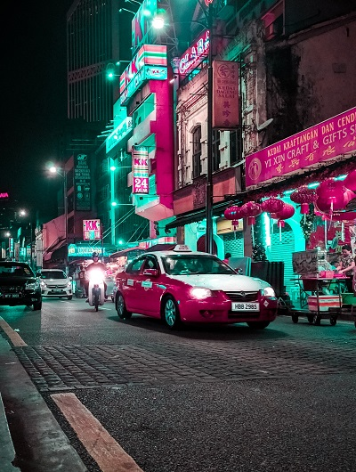
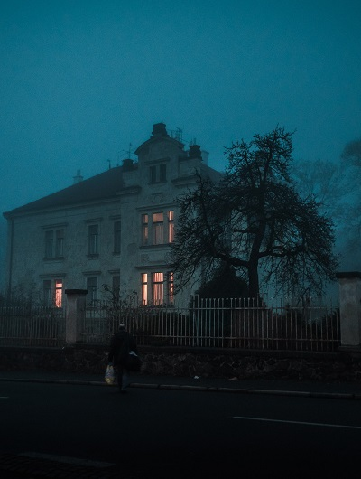

Special Places
Though the "Places of Power" are deeply coveted, they are not the only places which hold importance to the members of the Alliance in Vegas. These are the places of social significance, utility, and/or concern which occupy the knowledge of the Alliance...
Block 16

- AKA: The Magic Market
- Who Controls It?: No known entity controls it
- Leadership: N/A
- Veiled?: No, any open communication is allowed.
- Description: Hidden deep in the underground tunnels and basements of the former Red Light district of Vegas lies the seedy Block 16. This infamous landmark has belonged to the less savory elements of Awakened society for as long as anyone can remember. Here, you can find anything you could possibly want; legal or illegal, mundane or mystical, known or unknown, given the time (and the right price) the ages of Block 16 can find it for you… Notable locations include: The Arcade (a seedy den of gaming where one can play any game their heart desires, even if it never existed…), The Arizona Club (an old Hellfire Club converted into a modern hunting club, they can help you find any prey you might seek), and the “Wood Shack” (the rowdiest and seediest bar in Vegas, you’ll never find a more wretched hive of scum and villainy).
- Other Notes: While there is no official control over the area, take care as the criminal and sinister elements of the World of Darkness are present.
The Creepshow

- AKA: The Place Monsters Go To Die
- Who Controls It?: The Creepshow Crew
- Leadership: "Six Deep"
- Veiled?: Yes, take care when discussing supernatural elements.
- Description: A recently opened attraction, aiming to the ultimate permanent haunted house in the Mojave, the Creepshow aims to be as creepy and spooky as possible down to the last detail. The rumours which have surrounded the house since its opening a few years ago have only increased its reputation, as some claim that some of the guests over the years have never been seen again after entering its doors...
- Other Notes: Is hostile to most supernaturals, especially those with Taint/Jhor/Corruption/etc.
The Mirage & Treasure Island
- AKA: The Safe Meeting Place of the Alliance
- Who Controls It?: The Alliance
- Leadership: "The Five" - A council of representatives from all member groups (Fera, Rural Sept, Urban Sept, Torchbearers, and Traditions) with a Technocratic adviser
- Veiled?: No, unless mortals are expressly present
- Description: The official “neutral territory” of Vegas, where a delicate truce holds that no supernatural creature may harm another within the areas of these two resorts. All are welcome here, officially, but the detente does not mean it is safe. After all, the pacts which keep violence minimized only affect non-mortal individuals; nothing prevents a mortal from harming someone here, even if they can’t fight back, and Vegas has many mortals who would do anything for the right price...
- Other Notes: One belongs to the Mages, one to the Shifters, so they share ownership of both to cement the Alliance.